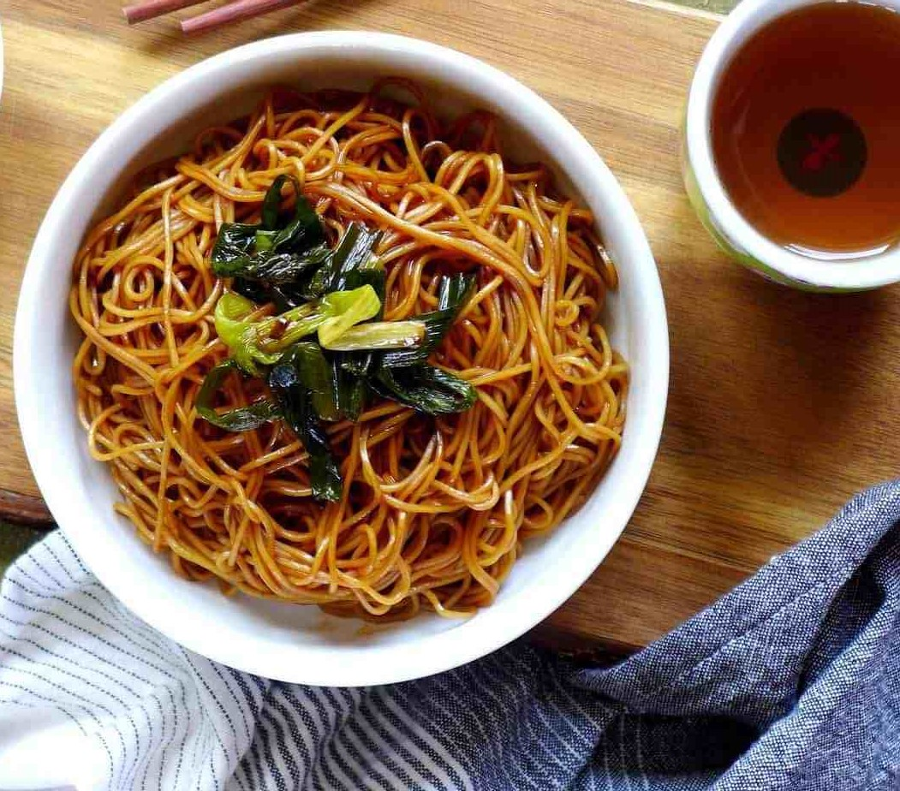

A humble dish from Shanghai, spring onion oil noodles is simple but delectable.
It can be served as breakfast, lunch, dinner, or as a side dish for parties.
Course: Main
Cuisine: Chinese
Preparation Time: 12 minutes

Reference: Taken from here
Back to Main page